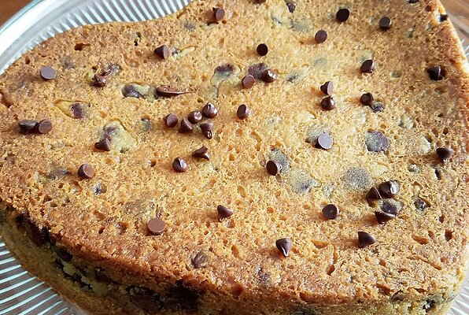

Cookie cake

Description
Like a giant chocolate chip cookie! You can vary the pudding flavor for a different taste.
Ingredients
- cooking spray
- 2¼ cups all-purpose flour
- 1 teaspoon baking soda
- 1 cup butter, softened
- ¾ cup brown sugar
- 1 (3.4 ounce) package instant vanilla pudding mix
- ¼ cup white sugar
- 1 teaspoon vanilla extract
- 2 eggs
- 1 (12 ounce) bag chocolate chips
- 1 cup chopped walnuts (optional)
Steps
- Preheat oven to 350 degrees F (175 degrees C). Grease a 10-inch springform pan with cooking spray.
- Mix flour and baking soda together in a bowl.
- Beat butter, brown sugar, pudding mix, white sugar, and vanilla extract together in a large bowl with an electric mixer. Beat in eggs. Stir in flour mixture gradually. Fold chocolate chips and walnuts into the batter.
- Pour batter into the springform pan.
- Bake in the preheated oven until light golden brown on top, about 25 minutes. Cool before cutting, about 20 minutes.
Back to home